Pour un collecteur, transporteur, recycleur ou trieur : créer son compte, se faire trouver par les industriels, et acheter des lots sur la Bourse. Avec, en miroir, le côté vendeur (l'industriel).
⏱ 20 minutes♻ Exemple : Eco Recyclage Kairouan🆓 Gratuit pour les prestataires
Avant de commencer, ayez sous la main
Le matricule fiscal de votre société
Une adresse email que vous consultez
Vos activités : collecte, transport, recyclage, tri
Votre zone d'intervention (villes, régions)
Vos agréments : n°, dates, et le PDF de chacun
Les déchets que vous acceptez
Le chemin en un coup d'œil
ACréer le compteSociété, vous, activités et agréments. Gratuit.
BLa validationDiva Software valide la société, puis chaque agrément.
CVotre profilCe que voient les industriels dans l'annuaire, et les déchets que vous acceptez.
ELa Bourse côté prestataireTrouver une annonce, faire une offre, négocier.
FLa Bourse côté vendeurRépondre aux offres, conclure, envoyer l'enlèvement.
GAprès l'accordL'enlèvement au prix convenu, comme d'habitude.
✓Fiche de testCochez ce qui marche, notez ce qui gêne.
Prestataire ou partenaire sans compte ? Un prestataire avec compte confirme lui-même les enlèvements, enregistre la réception et signe les bordereaux en ligne. Sans compte, l'industriel fait tout cela à sa place (Guide 4, R4). Créer un compte est gratuit.
Comment lire ce guide. L'élément à cliquer est entouré en rouge ; l'encadré vert dit ce que vous devez voir. Les étiquettes Prestataire et Vendeur disent qui fait l'étape.
DivaWaste · Guide 5 — Prestataire et Bourse
A. Créer le compte prestataire
A1Votre société
Créer un compte, puis choisissez Prestataire (collecteur, recycleur, transporteur). « L'accès est gratuit, vos agréments sont vérifiés par la plateforme. »
Raison sociale, Pays, Matricule fiscal (format montré sous le champ), Ville, Téléphone. Suivant.
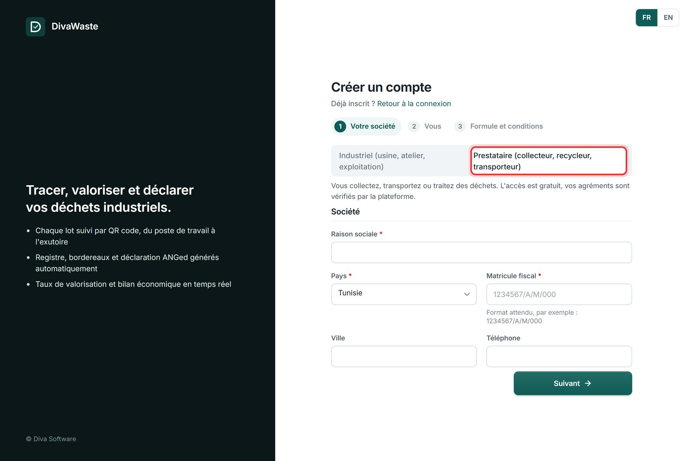
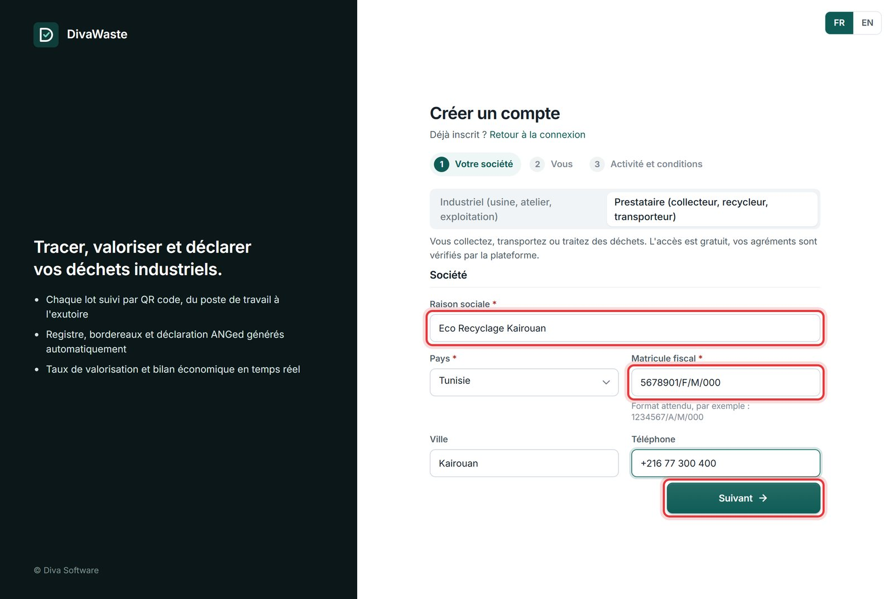
A2Vous
Prénom, nom, email, téléphone, mot de passe (12 caractères, une lettre et un chiffre). Suivant. Vous serez l'administrateur du compte.
DivaWaste · Guide 5 — Prestataire et Bourse
A3Activité et conditions
Activités * : cochez tout ce que vous faites — Collecteur, Transporteur, Recycleur, Trieur (ici Collecteur et Recycleur).
Zone d'intervention : où vous allez chercher les déchets (ici Kairouan, Sousse, Monastir).
Ajouter vos agréments maintenant (facultatif, mais conseillé) : Type d'agrément, N° d'agrément, Valable du, Expire le, et le PDF. Plusieurs ? Ajouter un agrément.
Cochez J'ai lu et j'accepte, puis Créer mon compte.
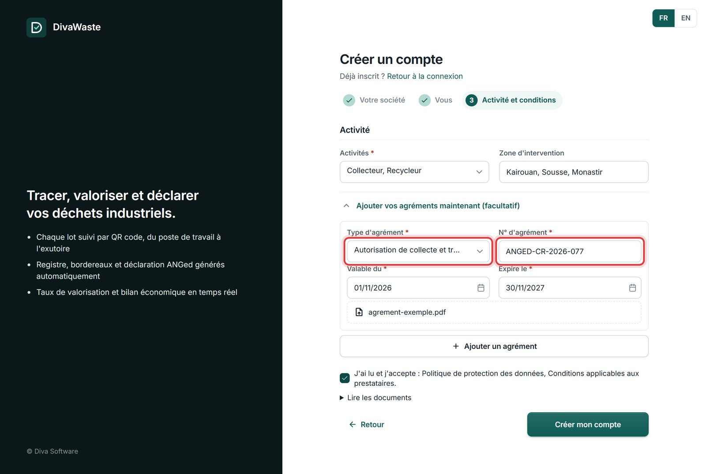
✔ Vous devez voir « Vérifiez votre boîte mail ». Confirmez l'adresse avec le lien reçu (valable 24 heures), puis connectez-vous : « En attente de validation ».
Pas d'agrément sous la main ? Vous pourrez le déposer plus tard, depuis Mon entreprise › Agréments. Sans agrément valide, vous ne pourrez pas être choisi pour un enlèvement.
DivaWaste · Guide 5 — Prestataire et Bourse
B. La validation par Diva Software
Deux vérifications, faites par l'équipe de Diva Software (le back-office de la plateforme) :
La société : « Inscriptions à valider ». Vous êtes prévenu par email ; cliquez alors sur Actualiser (ou reconnectez-vous).
Chaque agrément : « Agréments à valider » — le document est ouvert, puis Approuver et Confirmer (ou Rejeter).
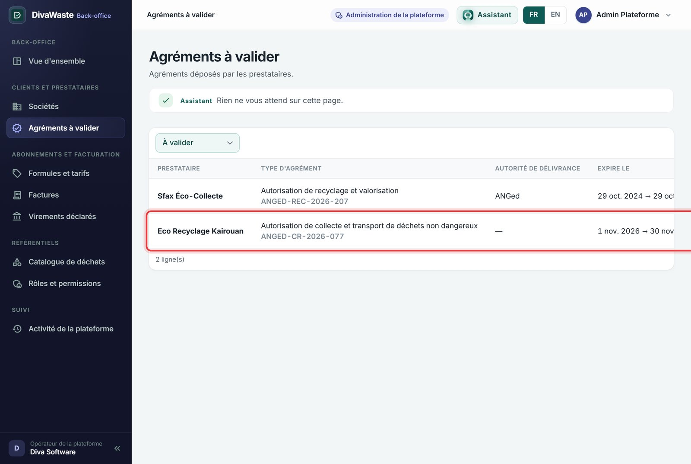
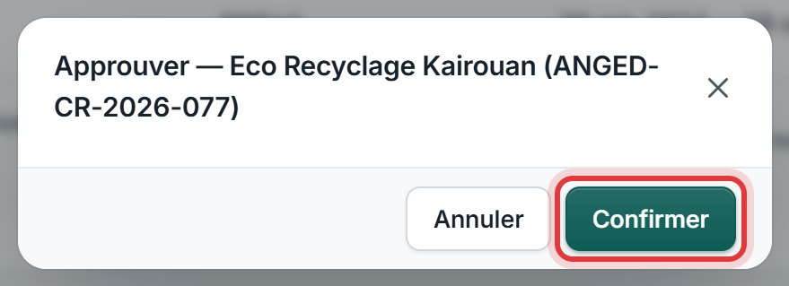
Écrans du back-office de Diva Software, pour information : vous ne les voyez pas.
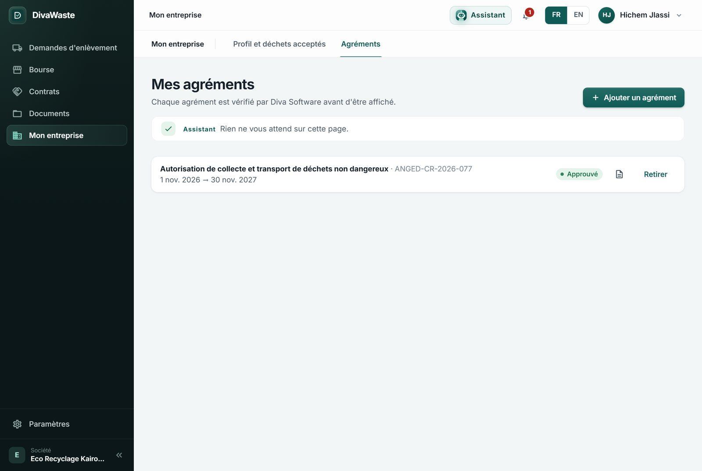
✔ Vous devez voir dans Mon entreprise › Agréments : votre agrément Approuvé (avant : « À valider »). Il apparaît alors dans l'annuaire, et vous pouvez être choisi pour un enlèvement.
Un agrément expire ? Les industriels qui travaillent avec vous le voient venir sur leur Accueil (« Agrément de … : expire dans 16 jour(s) »). Déposez le nouveau à temps : un agrément expiré vous retire des choix possibles.
DivaWaste · Guide 5 — Prestataire et Bourse
C. Votre profil dans l'annuaire
Mon entreprise › Profil et déchets acceptés : ce que voient les industriels quand ils cherchent un prestataire.
Activités, Description (une phrase : ce que vous faites, où), Zone d'intervention, Contact, Téléphone, Email.
Déchets acceptés : cliquez sur les familles que vous prenez (ici Produits textiles, Emballages). Pour chacune, précisez si besoin un type, la filière (Recyclage…) et ce que vous demandez par enlèvement (vos exigences : tri, conditionnement…).
Enregistrer.
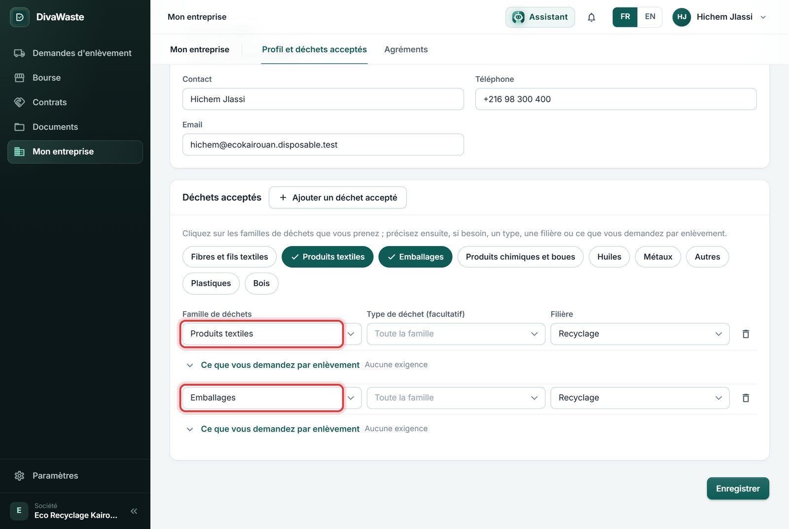
Pourquoi c'est important. La Bourse ne vous montre que les annonces des déchets que vous acceptez. Un industriel ne peut vous choisir que pour ces déchets.
DivaWaste · Guide 5 — Prestataire et Bourse
D. Votre espace prestataire
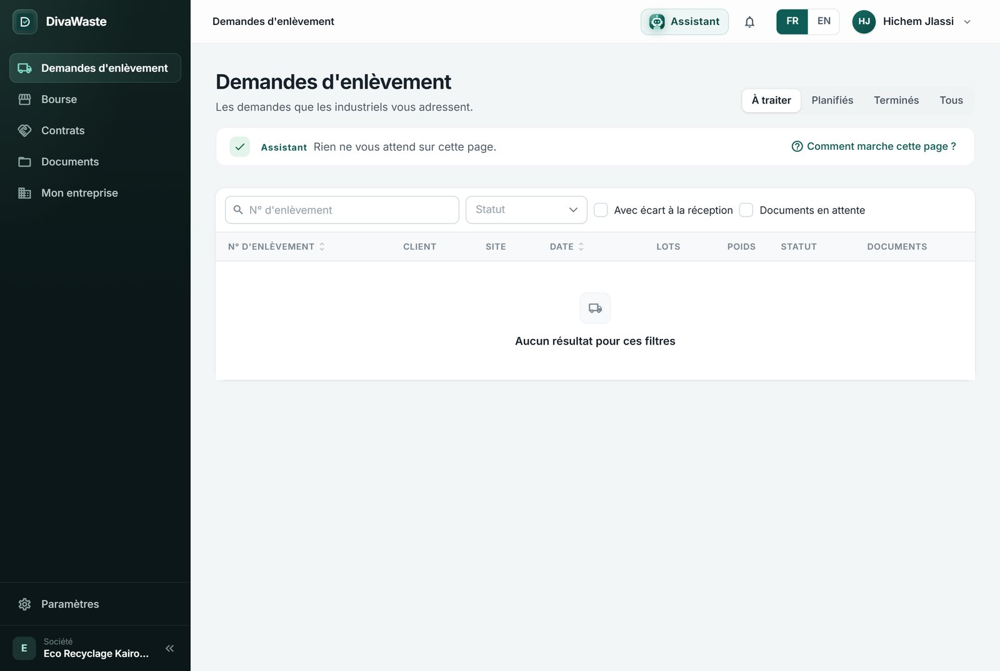
Menu
Ce que vous y faites
Demandes d'enlèvement
Les demandes des industriels : Confirmer la date, Proposer une autre date ou Refuser ; puis Enregistrer la réception et Déclarer le traitement (Guide 4, R3). Onglets À traiter, Planifiés, Terminés.
Bourse
Les lots mis en vente pour les déchets que vous acceptez (partie E).
Contrats
Les contrats que les industriels ont passés avec vous : prix, rythme, durée.
Documents
Les bordereaux à signer (comme transporteur et/ou destinataire), et vos certificats.
Mon entreprise
Profil, déchets acceptés, agréments.
Paramètres
Les réglages du compte (voir Guide 1, partie C).
DivaWaste · Guide 5 — Prestataire et Bourse
E. La Bourse, côté prestataire Prestataire
La Bourse met en relation un industriel qui a des déchets valorisables et les prestataires qui les veulent. Chaque négociation est privée entre le vendeur et un preneur.
E1Trouver une annonce
Menu Bourse : les annonces ouvertes, pour vos déchets acceptés. Le vendeur reste anonyme (seule la région du site est montrée) jusqu'à l'accord.
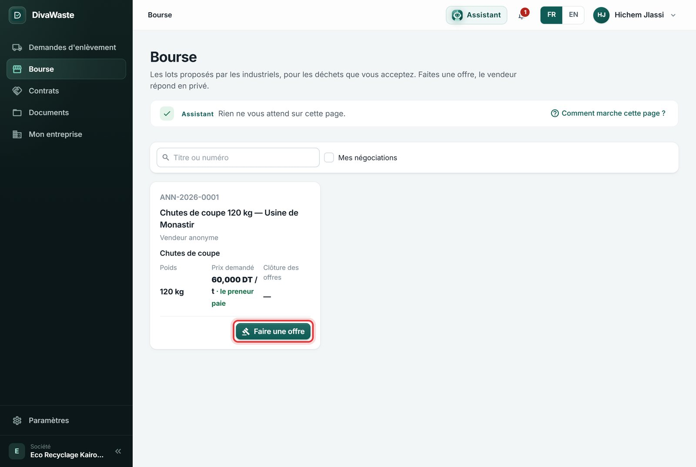
Ouvrez l'annonce : description, type, poids, lots, prix demandé (« 60 DT / t · le preneur paie »), date à partir de laquelle on peut enlever, clôture des offres.
DivaWaste · Guide 5 — Prestataire et Bourse
E2Faire une offre
Proposer le prix demandé : vous prenez le prix tel quel ; il ne reste que la date.
Proposer un prix : votre prix. Choisissez Je paie (vous achetez) ou Je reçois (le vendeur vous paie pour l'enlever), le montant et l'unité (par tonne, par kg, forfait).
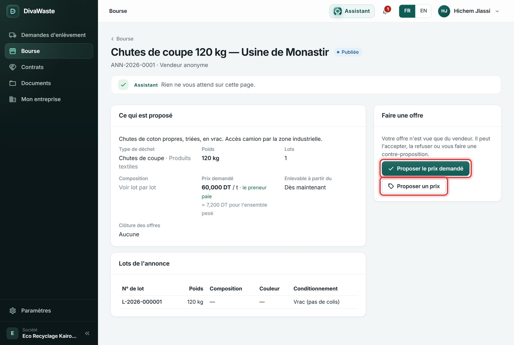
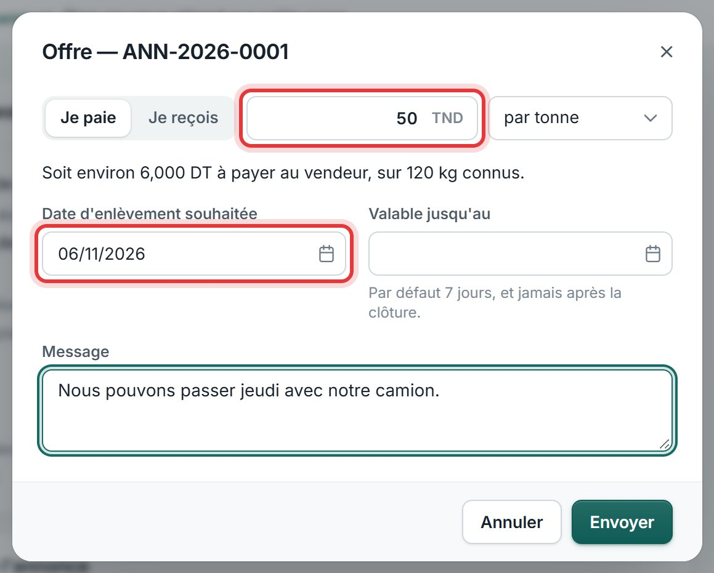
Indiquez la Date d'enlèvement souhaitée, éventuellement Valable jusqu'au (7 jours par défaut) et un message. Envoyer. L'estimation se met à jour : « Soit environ 6,000 DT à payer au vendeur, sur 120 kg connus ».
DivaWaste · Guide 5 — Prestataire et Bourse
F. La Bourse, côté vendeur Vendeur
Pour mettre un lot en vente : Guide 1, partie E. Les offres arrivent sur l'annonce (Enlèvements › Bourse), dans Offres, avec le nom du prestataire.
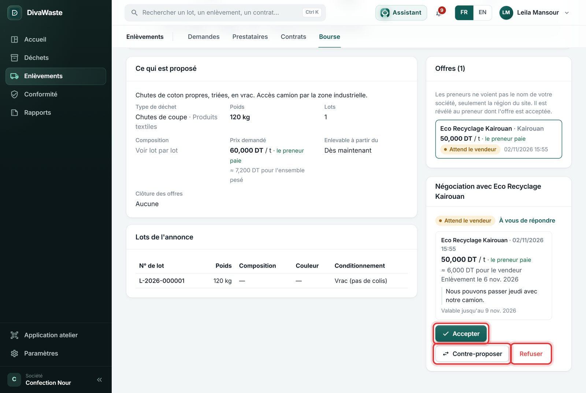
Pour chaque négociation : Accepter, Contre-proposer (un autre prix, une autre date) ou Refuser. Ici, le vendeur contre-propose 55 DT / t :
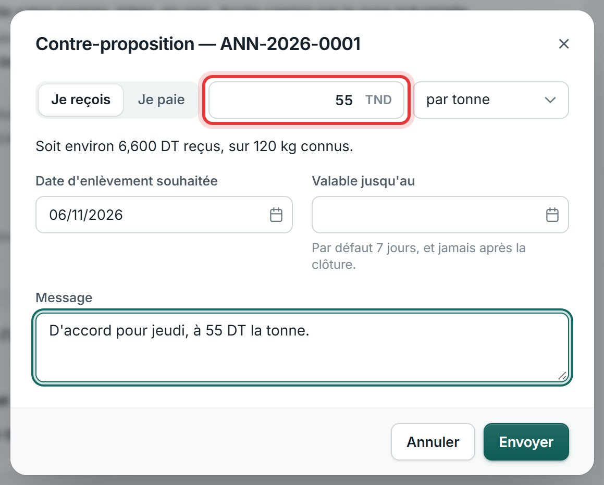
DivaWaste · Guide 5 — Prestataire et Bourse
E3Répondre à une contre-proposition Prestataire
Dans Ma négociation, la dernière proposition attend votre réponse : Accepter, Contre-proposer ou Refuser. Les échanges restent visibles, du plus ancien au plus récent.
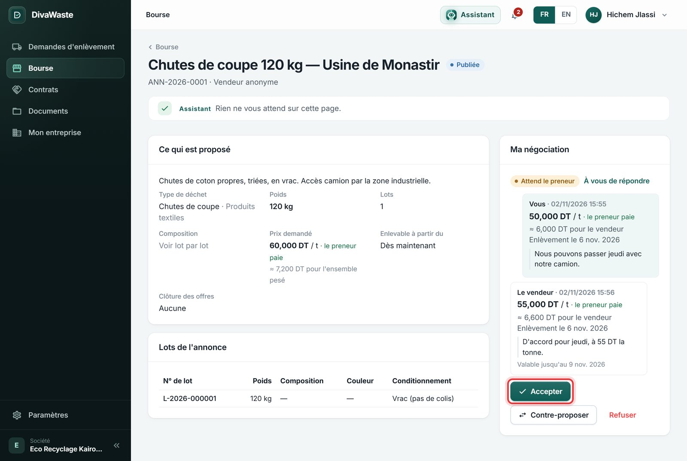
E4L'accord
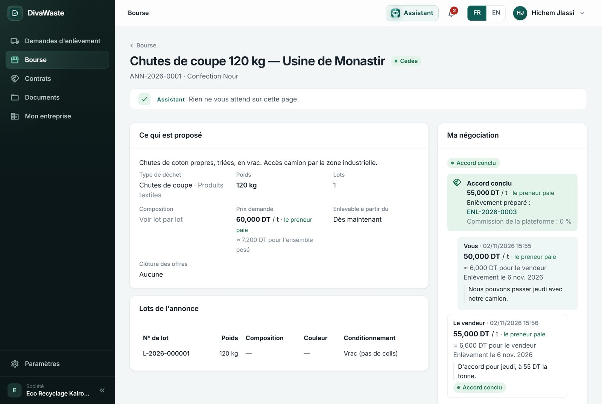
✔ Vous devez voir « Accord conclu — 55,000 DT / t · le preneur paie », l'annonce Cédée, le nom du vendeur révélé (Confection Nour), et « Enlèvement préparé : ENL-2026-0003 ».
DivaWaste · Guide 5 — Prestataire et Bourse
G. Après l'accord : l'enlèvement
G1Le vendeur envoie la demande Vendeur
L'accord a préparé un brouillon d'enlèvement : les lots de l'annonce, le preneur, la date convenue, et le prix (« Accord de la bourse (ANN-2026-0001) — 55 DT / t · Prix appliqué automatiquement à la réception, sur le poids reçu »). Le vendeur vérifie et clique sur Envoyer la demande.
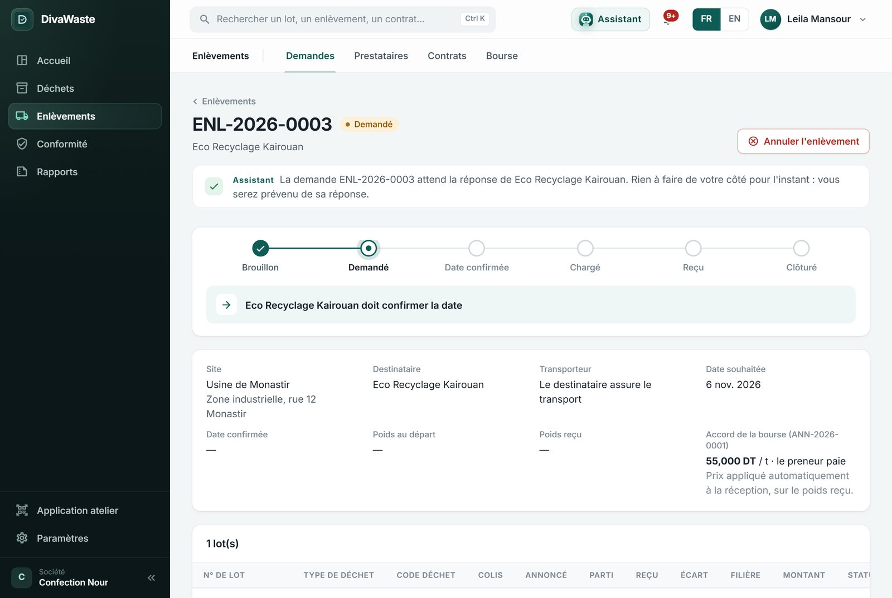
G2Le prestataire la reçoit Prestataire
Dans Demandes d'enlèvement, onglet À traiter : Confirmer la date, puis le cycle habituel — chargement, bordereau, réception, traitement, clôture (Guide 4, R3).
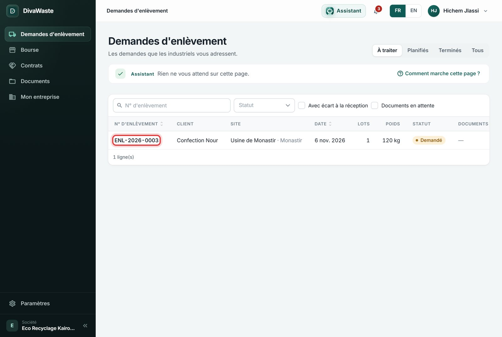
DivaWaste · Guide 5 — Prestataire et Bourse
Fiche de test
Cochez chaque résultat obtenu, notez ce qui a gêné.
Partie
Résultat attendu
☐
A Inscription
Étape 3 « Activité et conditions » (pas de formule) ; un agrément sans PDF est refusé.
☐
B Validation
« En attente de validation » puis l'espace prestataire ; l'agrément passe de « À valider » à « Approuvé ».
☐
C Profil
Les déchets acceptés s'enregistrent ; le profil est « publié dans l'annuaire ».
☐
E1 Annonce
Seules les annonces de vos déchets acceptés ; vendeur anonyme.
☐
E2 Offre
« Je paie / Je reçois » ; l'estimation dit « à payer au vendeur » ou « reçus du vendeur ».
☐
F Vendeur
L'offre arrive avec le nom du prestataire ; Accepter, Contre-proposer, Refuser.
☐
E4 Accord
« Accord conclu », annonce « Cédée », nom du vendeur révélé, enlèvement préparé.
☐
G Enlèvement
Le brouillon porte le prix de la bourse ; envoyé, il apparaît chez le prestataire.